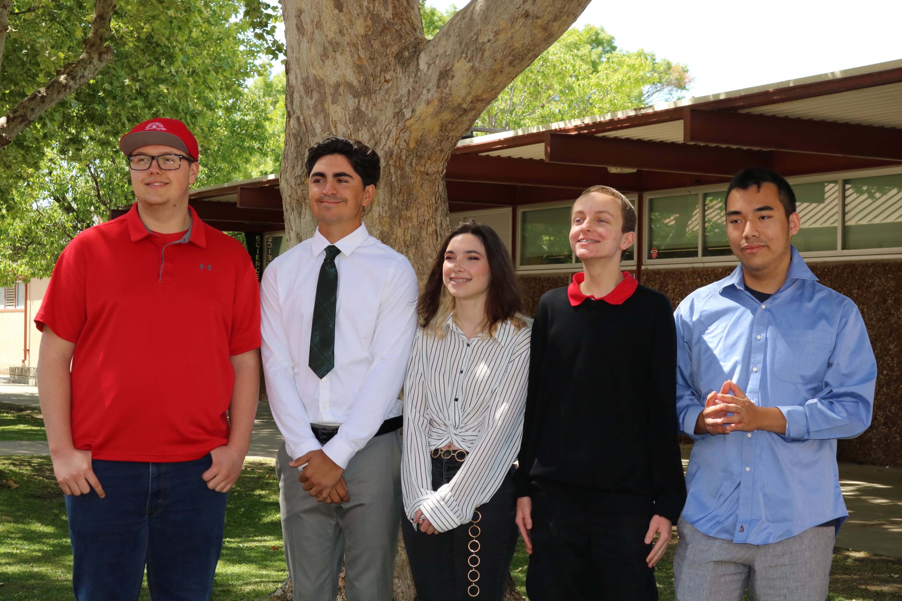

Technology Innovation
1/16/2022 - 5/24/2022
For my Senior Year of highschool, I participated in the Technology Innovations Course. The goal of this course was to introduce current software development standards and to create a space for techonolgy innovation. Five different groups were formed to work on various applications, such as, social media, games, and fitness apps. My group consisted of five classmates and worked on a finess app titled BikeJog. For this projects development we utilized github and an Agile development style with scrums and sprints. Within this developer group, I focued on fullstack development; primarily dealing with implementing the database as well as a goals page. I implemented google's realtime firebase; a NoSQL database. Additionally, I took charge in resolving any github merging conflicts or issues in the repo. Overall, I learned a lot about the software development process, programming in a group, and discovered my love for fullstack development.
Back to all blogs